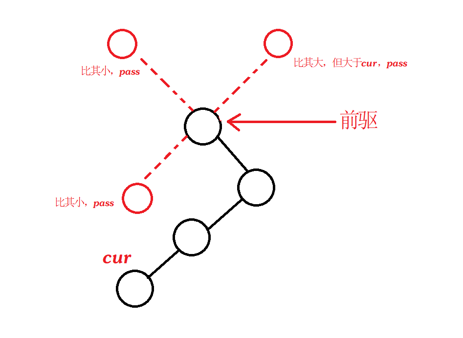
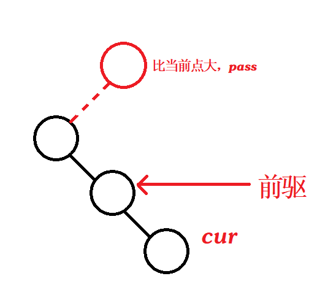
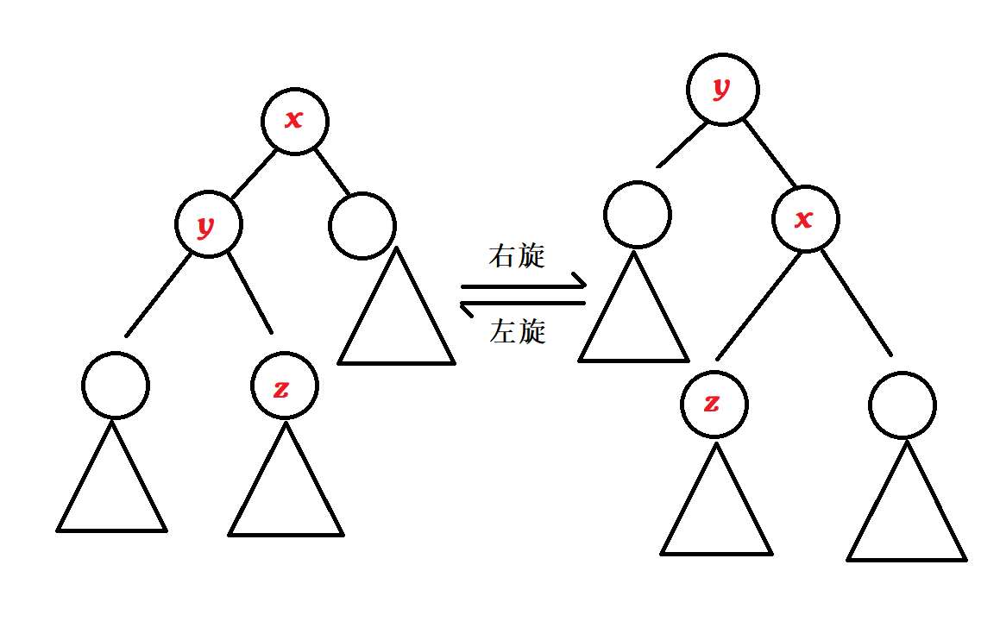
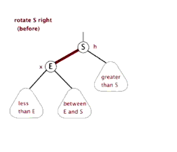
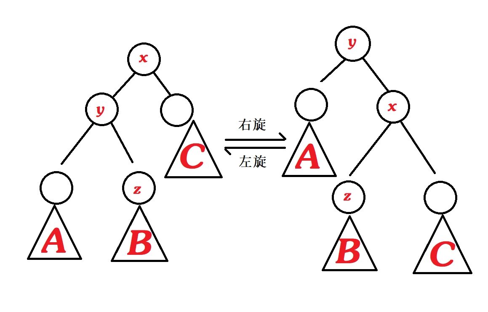
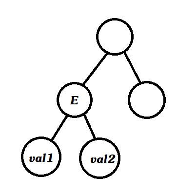

题目描述
您需要写一种数据结构（可参考题目标题），来维护一些数，其中需要提供以下操作：
- 插入数值 $x$。
- 删除数值 $x$ (若有多个相同的数，应只删除一个)。
- 查询数值 $x$ 的排名(若有多个相同的数，应输出最小的排名)。
- 查询排名为 $x$ 的数值。
- 求数值 $x$ 的前驱(前驱定义为小于 $x$ 的最大的数)。
- 求数值 $x$ 的后继(后继定义为大于 $x$ 的最小的数)。
注意： 数据保证查询的结果一定存在。
输入格式
第一行为 $n$，表示操作的个数。
接下来 $n$ 行每行有两个数 $opt$ 和 $x$，$opt$ 表示操作的序号($1\leq opt\leq 6$)。
输出格式
对于操作 $3,4,5,6$ 每行输出一个数，表示对应答案。
数据范围
$1\leq n\leq 100000$,所有数均在 $−10^7$ 到 $10^7$ 内。
输入样例
1
2
3
4
5
6
7
8
9
| 8
1 10
1 20
1 30
3 20
4 2
2 10
5 25
6 -1
|
输出样例
题目分析
前置知识
一、STL 中的 set 和 map 是红黑树的变种。常见的平衡树结构有 Treap, 红黑树，Splay，SBT，AVL ，替罪羊树等，平衡树是一种特殊的二叉搜索树，其中，Splay（伸展树）是一种灵活多变，应用广泛的树，一般经常使用。
二、BST(Binary Search Tree) 二叉搜索树：
一般情况下，BST 中是没有相同权值的，为了保证这一点，通常在每个具有不同权值的节点上设置一个计数器，便于操作
三、BST 支持的操作：
1、插入：（对应 set 等中的 insert）
（1）当插入的节点权值已经存在时
从根节点开始递归，根据当前左右子树大小关系选择递归方向，直到当前节点权值与插入的权值相等时，该点的计数器 count ++
（2）当插入的节点权值不存在时
从根节点开始递归，同样根据当前左右子树大小关系选择递归方向，直到当前节点为空，就在该空位置插入此节点，然后计数器 count ++
2、删除：（对应 set 等中的 erase）
叶节点：直接删除
中间节点：通过某种方式让该点变为叶节点然后进行删除
3、找最大/最小值 （对应 set 等中的 end - 1 or rbegin, begin ）
最大值：当前节点一直朝右子树方向递归直至右子树为空，该节点即为右子树中的最大值。
最小值：同理，从根节点以制朝左子树方向递归直至为空，该节点即为左子树中的最小值。
4、找前驱/后继：（对应 set 等中的 -- , ++ ）
此处的前驱和后继含义具体为：中序表示当前节点在中序遍历中的前一个位置，而后继表示当前节点在中序遍历中的后一个位置。
（1）前驱：
- 若当前节点
cur 存在左子树，则其前驱为左子树中权值的最大值，原因在于其左子树的所有点都是小于当前点的，而其中最大的点就一定是紧挨着当前点的前驱：先从当前节点往左递归一层，然后一直朝右递归直至不能递归为止
1
2
| left = p -> left;
while (left -> right) left = left -> right
|
- 若当前节点
cur 不存在左子树，前驱可能会处于以下如图所示的两种位置：

或者

（2）后继：
方法类似于求前驱。
5、求某个值的排名
6、求排名是 $k$ 的数是哪个
7、lower_bound（比某个数小的最大值）
8、upper_bound（比某个数大的最小值）
注意： 这里的 lower_bound 和 upper_bound 与求前驱后继不尽相同，前两个函数是给我们一个数值，让我们求出与其相邻的值，这些值可能不在树中，而求前驱和后继是指在树中找具有相邻权值的节点
BST 的每一步操作都是与树的高度相关的，当 BST 是一颗较为随机的树时，其树期望高度为 $\log n$，每步操作的时间复杂度也就是 $O(\log n)$，而最坏情况下 BST 可能退化成一条链，那么每步操作最坏情况就是 $O(n)$。
四、Heap 堆
具体分析见：Acwing 839. 模拟堆
算法分析
Treap 的定义
Treap = Tree + Heap，即二叉搜索树 + 堆（这里为大根堆）。
Treap 的核心思想即让 BST 变得尽量随机，即让其期望高度尽量接近 $\log n$。
Treap 的每个节点存储的信息：
1
2
3
4
5
6
| Node {
int l, r;
int key, val;
}tr[N];
|
由于每个节点的 key 和 val 都各不相同，这样就将整个树的结构唯一确定下来了，这样通过递归过程构建整棵树，是一定会构建出一颗唯一的二叉搜索树的。
每个节点所存储的 val 是一个随机值，因此，每个节点的 val 若随机一下，那么整棵树的状态也会随之随机一下，这样树的期望高度就是 $\log n$。（证明见《算法导论》）。
Treap 的一些操作函数的实现：
1、初始化：设置两个哨兵，根节点为 -INF，叶节点为 INF。
2、插入：
与堆的插入操作类似，先将其插入至树底，而后判断插入的点的 val 是否比父节点的 val 大，如果是，调换二者位置，类似于 up 操作。
Treap 中类似的操作称 “左旋”（zag），“右旋”（zig）：

左旋——自己变为右孩子的左孩子：

右旋——自己变为左孩子的右孩子：

（动图来自：Jammm）
左旋和右旋完全不会影响中序遍历的顺序，证明：

旋转前后输出的顺序均是 A -> y -> B -> x -> C
3、删除：
每次旋转可以将该节点降低一个位置，直到降低至叶子节点，就可以将其删除。旋转过程中，还需要维护堆的性质，即维护其平衡性不变，例如：

我们想要删除 E 节点，可以通过右旋将其与右儿子交换位置，但这里需要特判一下，这里已知的是 valE > val1, valE > val2，但是 val1 和 val2 的大小关系我们并不知道，倘若 val1 > val2，那么右旋之后依旧满足 val 大于右边子树任何节点的 val 的；但如果 val1 < val2，那么右旋之后就不满足这个性质了，这种情况下应该通过左旋操作将 E 节点与左二子交换位置来将其进行删除。
完整代码
1
2
3
4
5
6
7
8
9
10
11
12
13
14
15
16
17
18
19
20
21
22
23
24
25
26
27
28
29
30
31
32
33
34
35
36
37
38
39
40
41
42
43
44
45
46
47
48
49
50
51
52
53
54
55
56
57
58
59
60
61
62
63
64
65
66
67
68
69
70
71
72
73
74
75
76
77
78
79
80
81
82
83
84
85
86
87
88
89
90
91
92
93
94
95
96
97
98
99
100
101
102
103
104
105
106
107
108
109
110
111
112
113
114
115
116
117
118
119
120
121
122
123
124
125
126
127
128
129
130
131
132
133
134
135
136
137
138
139
140
141
142
143
144
145
146
| #include <iostream>
#include <cstring>
#include <algorithm>
#include <cstdio>
using namespace std;
const int N = 100010, INF = 1e8;
int n;
struct Node
{
int l, r;
int key, val;
int cnt, size;
}tr[N];
int root, idx;
void pushup(int p)
{
tr[p].size = tr[tr[p].l].size + tr[tr[p].r].size + tr[p].cnt;
}
int get_node(int key)
{
tr[ ++ idx].key = key;
tr[idx].val = rand();
tr[idx].cnt = tr[idx].size = 1;
return idx;
}
void zig(int &p)
{
int q = tr[p].l;
tr[p].l = tr[q].r, tr[q].r = p, p = q;
pushup(tr[p].r), pushup(p);
}
void zag(int &p)
{
int q = tr[p].r;
tr[p].r = tr[q].l, tr[q].l = p, p = q;
pushup(tr[p].l), pushup(p);
}
void build()
{
get_node(-INF), get_node(INF);
root = 1, tr[1].r = 2;
pushup(root);
if (tr[1].val < tr[2].val) zag(root);
}
void insert(int &p, int key)
{
if (!p) p = get_node(key);
else if (tr[p].key == key) tr[p].cnt ++ ;
else if (tr[p].key > key)
{
insert(tr[p].l, key);
if (tr[tr[p].l].val > tr[p].val) zig(p);
}
else
{
insert(tr[p].r, key);
if (tr[tr[p].r].val > tr[p].val) zag(p);
}
pushup(p);
}
void remove(int &p, int key)
{
if (!p) return;
if (tr[p].key == key)
{
if (tr[p].cnt > 1) tr[p].cnt -- ;
else if (tr[p].l || tr[p].r)
{
if (!tr[p].r || tr[tr[p].l].val > tr[tr[p].r].val)
{
zig(p);
remove(tr[p].r, key);
}
else
{
zag(p);
remove(tr[p].l, key);
}
}
else p = 0;
}
else if (tr[p].key > key) remove(tr[p].l, key);
else remove(tr[p].r, key);
pushup(p);
}
int get_rank_by_key(int p, int key)
{
if (!p) return 0;
if (tr[p].key == key) return tr[tr[p].l].size + 1;
if (tr[p].key > key) return get_rank_by_key(tr[p].l, key);
return tr[tr[p].l].size + tr[p].cnt + get_rank_by_key(tr[p].r, key);
}
int get_key_by_rank(int p, int rank)
{
if (!p) return INF;
if (tr[tr[p].l].size >= rank) return get_key_by_rank(tr[p].l, rank);
if (tr[tr[p].l].size + tr[p].cnt >= rank) return tr[p].key;
return get_key_by_rank(tr[p].r, rank - tr[tr[p].l].size - tr[p].cnt);
}
int get_prev(int p, int key)
{
if (!p) return -INF;
if (tr[p].key >= key) return get_prev(tr[p].l, key);
return max(tr[p].key, get_prev(tr[p].r, key));
}
int get_next(int p, int key)
{
if (!p) return INF;
if (tr[p].key <= key) return get_next(tr[p].r, key);
return min(tr[p].key, get_next(tr[p].l, key));
}
int main()
{
build();
scanf("%d", &n);
while (n -- )
{
int opt, x;
scanf("%d%d", &opt, &x);
if (opt == 1) insert(root, x);
else if (opt == 2) remove(root, x);
else if (opt == 3) printf("%d\n", get_rank_by_key(root, x) - 1);
else if (opt == 4) printf("%d\n", get_key_by_rank(root, x + 1));
else if (opt == 5) printf("%d\n", get_prev(root, x));
else printf("%d\n", get_next(root, x));
}
return 0;
}
|